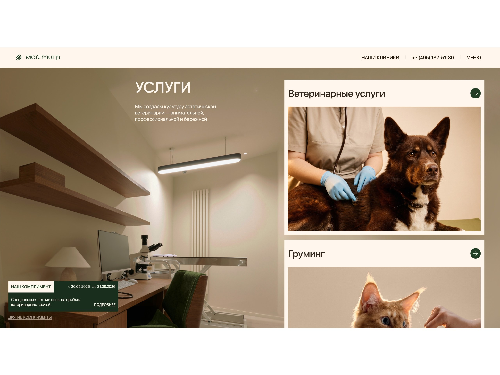

my tiger
“My Tiger” is a premium pet clinic in Moscow with veterinary care and grooming. I built a separate landing page for it that brings in booking requests.
in this case
-
I removed discounts but kept a reason to book.
The clinic’s “Compliments” instead of crossed-out prices. -
Grooming that includes a health check.
Why the groomer and vet pairing became the main reason to book. -
Why we didn’t make a page with a discount.
Three hypotheses and how I chose between them. -
After the review, booking got shorter.
What we removed after going through booking with the client.
 web-design
web-designProject at a glance
Role. I was the only designer on the team.
Timeline. 2 months.
Starting point. A new page for ads that runs alongside the clinic’s main website.
Outcome. A landing page with easy booking and a working prototype on which the client saw everything before development.
The task
The task was to make a page that brings bookings for vet visits and grooming from ads. In the clinic’s premium brand style and with real photos. And to show that grooming here is health care, not just a haircut.
Technical condition from the client: the clinic’s system doesn’t show vets’ free time, so you can’t pick an exact time on the page. The request is handled by an administrator.
What I found out
People choose by trust. For owners a pet is a family member, and what matters most is who will work with it and how. So I showed the people and the place right away.
Grooming is sold as a haircut. But here the groomer works together with a vet. I decided this is the clinic’s main difference.
Discounts make a clinic look cheaper to clients. A premium clinic needs special offers without crossed-out prices.
People come with different goals. For a service, for a vet, for a special offer or for a consultation. Each path should lead to a short request.
Three hypotheses and how I chose
I scored the hypotheses with ICE. Impact: how much the number of requests and trust in the clinic would change (1 to 10). Confidence: how sure I am of the result (in percent). Ease: how easy it is to build (1 to 10). The total is the product of the three scores.
Hypothesis A. A page with a discount. There will be requests, but from the wrong people.
Impact 4/10 · Confidence 40% · Ease 9/10 → ICE 14.4
Hypothesis B. A short copy of the website. It is safe, but there would be nothing to compare.
Impact 3/10 · Confidence 60% · Ease 8/10 → ICE 14.4
Hypothesis C. Trust and a short path. People, interiors, booking in a couple of steps and “Compliments” instead of discounts.
Impact 8/10 · Confidence 70% · Ease 5/10 → ICE 28
I chose C because it has the highest ICE score: 28 versus 14.4 and 14.4. It builds trust and allows a fair comparison of the page with the website. The boldest part was dropping discounts, and I discussed that with the client separately.

Where I was wrong and what I changed
Booking was longer than it needed to be. At first booking copied the website’s logic: service, vet, clinic, form. At the review the client and I went through it on a working prototype and saw the extra steps.
I removed the choice of vet and clinic, and now after choosing a service the person goes straight to the form. I made the online consultation a separate short path.
What I did and why
A clear first screen. Logo, who we are, a live video and a “Book” button.
Why: within a couple of seconds it is clear where you are and what to do.

The “Compliment” panel is always visible. The dark panel with the brand tiger stays in place while you scroll.
Why: the reason to book is always nearby, with no need for annoying banners.
Booking on top of the page. The form opens right on the landing page, over a photo of an exam room.
Why: there is no need to go anywhere, so people don’t get lost.

A short form. Name, phone, pet and a convenient way to be contacted. You can also request a callback. You can’t pick an exact time, so the form just collects contact details and the administrator agrees on the time.
Why: the form is quick to fill in, and people can reply where it suits them.

Grooming next to veterinary care. Vets and groomers are shown as one team.
Why: it doesn’t feel scary to trust them with a pet, and grooming becomes health care.


“Compliments” instead of discounts. A special price with an end date and an explanation of why it matters for the pet.
Why: there is a reason to book now, and the clinic doesn’t look cheap.
Online consultation. Its own short booking path.
Why: it is a first step for people who aren’t ready to come to the clinic yet.

Reviews and clinics on the map. Rating, addresses, opening hours and directions at the end of the page.
Why: it answers “can I trust them” and “how far is it”.
Defending the design and the developer handoff
I showed the client a working page instead of pictures and explained how each decision helps booking. We discussed dropping discounts the most.
I handed the developers all screens, windows and booking steps, and noted the changes after the review right in the mockup.
How I work. In two months I took the project from research to development on my own. I show debatable decisions on a live prototype.

Results
The page is live, and numbers are being collected. We compare how many bookings come from the landing page and from the main website. When the results come in, I will add them here.
What became easier
Four paths to booking: services, vets, “Compliments”, consultation.
Short booking right on the page.
Contact where it suits you: phone, messenger or a callback.
How the page explains the clinic’s value
Trust first: people and the place, and then the request to book.
Grooming as health care thanks to the groomer and vet pairing.
Special offers without discounts, so the clinic stays premium.
How AI helped
Claude: data collection and analysis. Reviews of clinics and grooming, from which I picked out owners’ main fears. There are many more sources now, so the conclusions are more accurate. 5 minutes instead of a full day of manual searching.
Claude: analysis of the main website’s requests by service and source. 2 minutes instead of 2 hours in Excel.
Claude: a live coded prototype. A working page, almost like the finished product, that can be used for testing. 20 minutes instead of 6 hours in Figma.
Claude + Figma Agent: preparing the file for developers. Styles, layer names, versions for different screens, the design system, checking for missing screens and the user path logic. 1 hour instead of 16 hours of work.
AI saves me time, and I make the decisions myself.